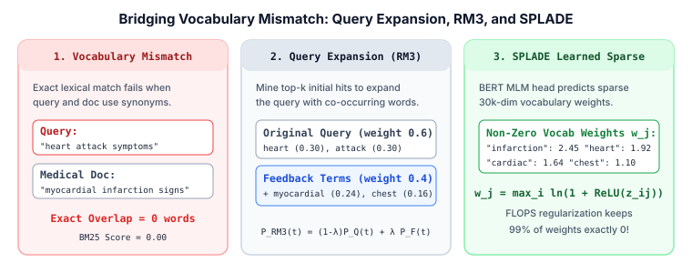

Search, Ranking & Retrieval · Foundations & Lexical Retrieval · Chapter 3
3. Query Understanding, Synonym Expansion & Learned Sparse Retrieval (SPLADE)
BM25 only scores words that appear literally in both the query and the document. When a user searches for "heart attack" and a medical article writes "myocardial infarction", exact lexical matching returns a score of zero. This vocabulary mismatch problem motivated three generations of solutions: query synonym expansion, pseudo-relevance feedback (RM3), and neural learned sparse representations (SPLADE) that predict sparse term weights directly inside a standard inverted index.

1. The Vocabulary Mismatch Problem & Query Rewriting
Lexical retrieval assumes that relevance is signaled by shared surface tokens. In real traffic, two phenomena break this assumption:
- Synonymy: Different words express the same concept (
"laptop"vs."notebook computer","NYC"vs."New York City"). This hurts Recall because relevant documents are missed. - Polysemy: The same word carries multiple meanings depending on context (
"apple"the fruit vs."Apple"the company;"java"the island vs. the programming language). This hurts Precision.
Production search pipelines run a Query Understanding (QU) layer before touching the inverted index: spell correction, stemming/lemmatization (reducing "running" $\to$ "run"), phrase detection ("new york" as a single token), and synonym graph expansion mined from query-click logs (where users who searched $q_1$ and $q_2$ clicked the same URLs).
2. Pseudo-Relevance Feedback (RM3)
What if we don't have click logs yet? Pseudo-Relevance Feedback (PRF) assumes that the top $k$ documents returned by an initial BM25 search are mostly relevant, and mines those top $k$ documents for frequently co-occurring expansion words.
The most widely used PRF algorithm is RM3 (Relevance Model 3). Given original query term probabilities $P_Q(t)$ and feedback term probabilities $P_F(t)$ aggregated from the top-$k$ retrieved documents, RM3 linearly interpolates them with weight $\lambda \in [0, 1]$:
$$P_{\text{RM3}}(t) = (1 - \lambda)\, P_Q(t) + \lambda\, P_F(t)$$
For example, if the query is "heart attack" ($\lambda = 0.4$), and the top $5$ medical articles mention Both "heart attack" and "myocardial infarction", RM3 adds "myocardial" and "infarction" into the second-pass BM25 query. While RM3 boosts recall on average, it suffers from query drift when the initial top-$k$ hits are noisy, and it doubles latency by requiring two index lookups.
3. SPLADE: Neural Learned Sparse Retrieval
Instead of running two search passes, what if a neural network expanded every document and query into the full vocabulary space at indexing time, while keeping the representation sparse enough to store in a classic inverted index?
SPLADE (Sparse Lexical and Expansion Model, Formal et al., 2021) passes an input text of $m$ tokens through a pretrained BERT Masked Language Model (MLM) head. For each input token position $i \in \{1, \dots, m\}$ and each wordpiece $j \in \{1, \dots, |V|\}$ in BERT's $30{,}522$-token vocabulary, the MLM head outputs logit $z_{ij}$. SPLADE pools across the sequence using a log-saturated ReLU:
$$w_j = \max_{i \in \{1, \dots, m\}} \ln\!\big(1 + \text{ReLU}(z_{ij})\big)$$- $\text{ReLU}(z_{ij}) = \max(0, z_{ij})$ ensures all term weights are non-negative ($w_j \ge 0$), which is required for WAND / Block-Max WAND pruning.
- $\ln(1 + \cdot)$ prevents a single dominant term weight from overwhelming all other terms, playing the same saturation role as $k_1$ in BM25.
- Because $w_j$ is defined over the entire vocabulary $V$, SPLADE simultaneously performs term weighting (assigning high weights to important words already in the document, and $0$ to stopwords) and term expansion (assigning positive weights to synonyms not present in the original text).
Enforcing Sparsity with FLOPS Regularization
If every document activated $10{,}000$ vocabulary tokens, the inverted index would explode in size and become as slow as brute-force scanning. SPLADE adds a differentiable FLOPS regularizer (Paria et al., 2020) that penalizes the expected number of posting-list operations per query:
$$\mathcal{L}_{\text{FLOPS}} = \sum_{j=1}^{|V|} \left(\frac{1}{B} \sum_{b=1}^{B} |w_j^{(b)}|\right)^{\!2}$$Here $\bar{a}_j = \frac{1}{B}\sum_{b=1}^B |w_j^{(b)}|$ is the mean activation of vocabulary token $j$ across a mini-batch of $B$ documents. Squaring the batch mean ($\bar{a}_j^2$) penalizes tokens that fire across many documents simultaneously, forcing the model to use a small, evenly distributed set of ~100–250 non-zero tokens per document.
4. Worked Numerical Example: Exact BM25 vs. SPLADE
Suppose a user queries $Q = \text{"pypl earnings"}$ and we want to score a financial news article $d = \text{"PayPal quarterly revenue grew 9\%"}$. Notice that $Q$ and $d$ share zero exact words, because the query uses the ticker symbol "pypl" and "earnings" while the document writes "PayPal" and "revenue".
Once SPLADE encodes both texts into sparse vocabulary vectors, their relevance score is simply the sparse dot product over shared non-zero vocabulary dimensions:
$$S(Q, d) = \sum_{j \in Q_{\text{nz}} \cap d_{\text{nz}}} w_j(Q) \times w_j(d)$$| Vocabulary Token $j$ | In Raw Query? | In Raw Doc? | SPLADE Query Weight $w_j(Q)$ | SPLADE Doc Weight $w_j(d)$ | Product $w_j(Q) \cdot w_j(d)$ |
|---|---|---|---|---|---|
"pypl" |
Yes | No (Expanded) | $2.40$ | $1.50$ | $3.60$ |
"paypal" |
No (Expanded) | Yes | $2.10$ | $2.50$ | $5.25$ |
"earnings" |
Yes | No (Expanded) | $1.90$ | $1.40$ | $2.66$ |
"revenue" |
No (Expanded) | Yes | $1.30$ | $2.00$ | $2.60$ |
"quarterly" |
No | Yes | $0.00$ | $1.10$ | $0.00$ |
While exact BM25 scores $0.00$, SPLADE's sparse dot product yields:
$$S(Q, d) = 3.60 + 5.25 + 2.66 + 2.60 = \mathbf{14.11}$$Even better, because SPLADE outputs integer-quantized weights over standard vocabulary IDs, we can store SPLADE vectors inside a standard Lucene/Pisa inverted index and query them with Block-Max WAND in milliseconds.
5. Minimal PyTorch Implementation of SPLADE Pooling & FLOPS Loss
import torch
import torch.nn.functional as F
def splade_max_pool(mlm_logits: torch.Tensor, attention_mask: torch.Tensor) -> torch.Tensor:
"""
mlm_logits: [batch_size, seq_len, vocab_size] from BERT MLM head
attention_mask: [batch_size, seq_len] (1 for valid tokens, 0 for padding)
Returns sparse vocabulary weights w: [batch_size, vocab_size]
"""
# w_ij = log(1 + ReLU(z_ij)) masked by valid tokens
activated = torch.log1p(F.relu(mlm_logits)) * attention_mask.unsqueeze(-1)
# Max-pool across sequence length dimension
sparse_vec, _ = torch.max(activated, dim=1)
return sparse_vec
def flops_regularization_loss(sparse_vec: torch.Tensor) -> torch.Tensor:
"""
Penalizes the squared mean activation per vocabulary dimension across the batch.
"""
mean_activation_per_term = torch.mean(torch.abs(sparse_vec), dim=0)
return torch.sum(mean_activation_per_term ** 2)
# Example usage
B, L, V = 4, 16, 30522
logits = torch.randn(B, L, V) - 2.5 # Most logits negative -> ReLU zeros them out
mask = torch.ones(B, L)
w = splade_max_pool(logits, mask)
nnz_per_doc = (w > 0).float().sum(dim=-1).mean().item()
print(f"Avg non-zero vocab terms: {nnz_per_doc:.1f} / {V} | FLOPS loss: {flops_regularization_loss(w):.2f}")